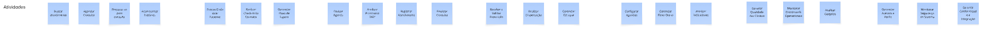

USM
Introdução ao Documento
Este documento apresenta a estruturação de requisitos para o projeto "HealthConnect" utilizando a técnica de User Story Mapping (USM). O USM é uma ferramenta visual que organiza o Product Backlog como uma narrativa da jornada do usuário, permitindo o entendimento compartilhado e a definição de Releases de forma incremental e orientada a valor.
- O USM interativo se encontra no final do documento
Introdução ao Estudo de Caso: HealthConnect
A HealthConnect é uma empresa no setor de saúde que busca unificar e transformar a experiência digital em sua rede de clínicas e hospitais. O desafio é superar a fragmentação de sistemas legados, a redundância de processos (como prontuários incomunicáveis e prescrições manuscritas) e a baixa interoperabilidade entre as unidades e parceiros externos. A missão do novo produto é entregar uma plataforma unificada de gestão do cuidado, combinando prontuário eletrônico, agendamento, prescrições eletrônicas e painéis gerenciais, com foco em segurança, usabilidade e interoperabilidade.
Explicação da Estrutura do User Story Mapping (USM)

O User Story Mapping transforma uma lista plana de requisitos em uma estrutura visual hierárquica para facilitar o entendimento e a priorização:
-
Eixo Horizontal (Backbone / Fluxo da Narrativa): Representa o tempo e a sequência lógica das atividades do usuário.
- Atividades: Os grandes passos ou grupos de tarefas que o usuário realiza para alcançar um objetivo maior (a espinha dorsal do mapa).
- Tarefas do Usuário: Ações de alto nível que compõem a história completa, sequenciadas da esquerda para a direita.
-
Eixo Vertical (Detalhe / Prioridade): Representa o detalhamento e a importância.
- Histórias de Usuário (User Stories): Detalhes da Feature/Tarefa de alto nível. São escritas na perspectiva do usuário (
Eu, como <papel> quero <ação> para <valor>) e colocadas verticalmente abaixo da Tarefa que detalham. - Release Slices (Fatias de Entrega): As linhas horizontais inferiores definem lançamentos incrementais. O nível superior representa o Mínimo Produto Viável (MVP), contendo o menor número de tarefas essenciais para o usuário atingir seu objetivo.
- Histórias de Usuário (User Stories): Detalhes da Feature/Tarefa de alto nível. São escritas na perspectiva do usuário (
Mapeamento de Histórias e Priorização
1. Personas e obejetivos


Esta seção relaciona cada ator do sistema com o principal objetivo de negócio ou a meta que ele busca alcançar ao utilizar a nova plataforma HealthConnect:
- Paciente: Realizar Consultas Médicas. O paciente busca autonomia, clareza e segurança no acompanhamento de sua condição crônica.
- Recepcionista: Gestão de Pacientes. A Recepcionista é o primeiro contato e é responsável pelo cadastro, atualização de dados e orientação de fluxo.
- Médico Clínico: Consultar o Paciente. O Médico precisa de visão clínica integrada e apoio à decisão para registro ágil no atendimento de alta demanda.
- Farmacêutica: Gestão de Medicamentos. Responsável por validar prescrições, dispensar medicamentos e orientar o paciente.
- Coordenador de Agendamento: Gestão de Agendas dos Médicos. Orquestra agendas de múltiplos especialistas e unidades, buscando equilíbrio entre demanda e capacidade.
- Gestora de Operações Clínicas: Administrar indicadores de desempenho das clínicas. Acompanha indicadores assistenciais e operacionais para atuar em melhoria contínua de processos.
- Diretor de Tecnologia: Supervisiona a infraestrutura tecnológica. Responsável por garantir a disponibilidade, segurança, conformidade e o roadmap tecnológico da rede.
2. Ações/Atividades (Backbone)

Esta seção lista as principais atividades (Tarefas de Usuário - blocos azuis) que compõem o Backbone para cada Persona e Objetivo no fluxo da narrativa:
-
Paciente - Objetivo: Realizar Consultas Médicas
- Buscar atendimento
- Agendar Consulta
- Preparar-se para consulta
- Acompanhar histórico
-
Recepcionista - Objetivo: Gestão de Pacientes
- Buscar/Cadastrar Paciente
- Realizar Check-in da Consulta
- Gerenciar Fluxo de Espera
-
Médico Clínico - Objetivo: Consultar o Paciente
- Revisar Agenda
- Analisar Prontuário 360º
- Registrar Atendimento
- Finalizar Consulta
-
Farmacêutica - Objetivo: Gestão de Medicamentos
- Receber e Validar Prescrição
- Realizar Dispensação
- Gerenciar Estoque
-
Coordenador de Agendamento - Objetivo: Gestão de Agendas dos Médicos
- Configurar Agendas
- Gerenciar Fluxo Diário
- Analisar Indicadores
-
Gestora de Operações Clínicas - Objetivo: Administrar indicadores de desempenho das clínicas
- Garantir Qualidade das Clínicas
- Monitorar Dashboards Operacionais
- Analisar Gargalos
-
Diretor de Tecnologia - Objetivo: Supervisionar a infraestrutura tecnológica
- Gerenciar Acessos e Perfis
- Monitorar Segurança do Sistema
- Garantir Conformidade e Integração
3. Histórias de Usuário (Tarefas e Detalhes)

Tarefas dos Pacientes
Esta seção detalha as tarefas e as regras de negócio/critérios de aceite para o fluxo do Paciente.
A. Atividade: Buscar atendimento * Buscar por especialidade e Unidade * Listagem de Opções: O campo de especialidade deve apresentar todas as especialidades cadastradas na rede. * Seleção de Unidade: O usuário deve poder selecionar uma unidade específica ou a opção "Todas". * Buscar por nome do médico * Filtrar por convênio * Ver perfil do médico
B. Atividade: Agendar Consulta * Visualizar horários disponíveis * Exibição de Livres: O sistema deve exibir, na lista de resultados, apenas os horários que estão vagos. * Ocultação de Ocupados: Horários já agendados ou bloqueados não devem aparecer na lista para o paciente. * Ordenação: Os horários devem ser mostrados em ordem cronológica (do mais próximo para o mais distante). * Informações do Card: Cada horário disponível deve mostrar o nome do médico e a data correspondente. * Selecionar horário * Selecionar modalidade (Presencial/Tele) * Confirmar (com login/cadastro) * Receber confirmação * Efetuar pagamento
C. Atividade: Preparar-se para consulta * Visualizar instruções de preparo * Receber lembrete da consulta * Automação do Envio: O sistema deve enviar o lembrete automaticamente (sem ação humana) um período definido antes da consulta (ex: 24h ou 48h). * Conteúdo da Mensagem: A notificação deve exibir claramente a data, o horário e o endereço (unidade) da consulta. * Botões de Ação: O lembrete deve possuir botões que permitam "Confirmar Presença" ou "Cancelar Agendamento" com apenas um clique. * Mensagens seguras com equipe
D. Atividade: Acompanhar histórico * Acessar histórico de consultas * Visualizar prescrições * Ordenação Cronológica: As receitas devem ser listadas da mais recente para a mais antiga. * Detalhes Essenciais: O card da prescrição deve exibir claramente o Nome do Medicamento, Dosagem e Posologia (como tomar). * Status de Validade: O sistema deve indicar visualmente se a receita ainda está "Ativa" ou se está "Vencida". * Opção de Download: Deve haver um botão funcional para baixar a receita oficial assinada digitalmente (PDF) para uso em farmácias externas. * Acessar resultados de exames * Centralização: A lista deve exibir exames realizados em qualquer unidade da rede HealthConnect (interoperabilidade). * Indicador de Status: Exames em não processados pelo laboratório devem aparecer com o status "Em Análise" e sem link de acesso. * Acesso ao Laudo: Para exames concluídos, o clique deve abrir o laudo técnico (visualização ou PDF). * Data de Realização: Cada item da lista deve mostrar a data em que o exame foi coletado.0
Tarefas da Recepcionista
Esta seção detalha as tarefas e as regras de negócio/critérios de aceite para o fluxo da Recepcionista, que realiza a Gestão de Pacientes:
A. Atividade: Buscar/Cadastrar Paciente * Buscar paciente por CPF * Busca Global: A pesquisa pelo CPF deve varrer a base de dados de todas as unidades da rede, e não apenas da clínica local. * Identificação Positiva: O resultado da busca deve exibir Nome Completo, Data de Nascimento e Nome da Mãe para garantir que é a pessoa correta. * Tratamento de Erro: Caso o CPF não seja encontrado, o sistema deve exibir a mensagem "Paciente não encontrado" e habilitar um botão de atalho para "Cadastrar Novo". * Busca Alternativa: O sistema deve permitir a busca por Nome Completo + Data de Nascimento caso o paciente não saiba o CPF. * Cadastrar novo paciente * Campos Obrigatórios: O botão "Salvar" deve permanecer desabilitado até que Nome, CPF, Data de Nascimento e Telefone sejam preenchidos. * Bloqueio de Duplicidade: O sistema deve impedir a criação de um novo registro se o CPF informado já existir na base ativa. * Atualizar dados cadastrais
B. Atividade: Realizar Check-in da Consulta * Registrar a "chegada" do paciente * Mudança de Status: Ao clicar em "Confirmar Chegada", o status do agendamento deve mudar imediatamente de "Agendado" para "Em Espera" (ou "Aguardando Triagem"). * Bloqueio de Ação: O sistema não deve permitir registrar a chegada se a consulta estiver com status "Cancelada" ou se a data do agendamento não for a data atual (hoje). * Atualização de Listagem: O nome do paciente deve aparecer imediatamente na lista de "Pacientes na Unidade" ou no painel do Médico. * Confirmar dados da consulta agendada * Digitalizar e anexar documentos * Validar e coletar assinatura de consentimentos (LGPD)
C. Atividade: Gerenciar Fluxo de Espera * Visualizar fila de espera da recepção e triagem * Gerar senhas ou QR code de atendimento * Encaminhar paciente para a triagem * Enviar mensagens de boas-vindas/instruções
Tarefas do Médico Clínico
Esta seção detalha as tarefas e as regras de negócio/critérios de aceite para o fluxo do Médico Clínico, que realiza a Consulta do Paciente:
A. Atividade: Revisar Agenda * Visualizar lista de pacientes do dia * Verificar status do paciente
B. Atividade: Analisar Prontuário 360º * Visualizar histórico consolidado (de todas as unidades) * Conteúdo das Notas: A listagem deve exibir o texto da evolução clínica, a data do atendimento e o nome do profissional que realizou o registro. * Integração de Unidades: O histórico deve carregar automaticamente as anotações feitas em qualquer clínica da rede HealthConnect, não apenas na atual. * Ordenação Temporal: Os registros devem ser apresentados obrigatoriamente em ordem cronológica decrescente (do mais recente para o mais antigo). * Identificação da Especialidade: Cada item da lista deve identificar claramente qual foi a especialidade daquela consulta (ex: "Cardiologia", "Clínica Médica"). * Ver alertas de alergias e interações medicamentosas * Visualizar exames e imagens anteriores
C. Atividade: Registrar Atendimento * Registrar evolução clínica * Anexar arquivos/fotos ao prontuário * Inserir diagnóstico (com busca de CID)
D. Atividade: Finalizar Consulta * Criar prescrição eletrônica * Seleção de Medicamentos: O sistema deve permitir buscar e selecionar medicamentos a partir de uma base de dados oficial padronizada (evitando digitação livre do nome da droga). * Dados da Posologia: O sistema deve obrigar o preenchimento dos campos: Dosagem, Via de Administração e Frequência de uso antes de permitir salvar. * Edição de Itens: O médico deve conseguir adicionar, remover ou editar medicamentos na lista da prescrição atual antes de finalizar o documento. * Geração do Documento: Ao finalizar, o sistema deve gerar o PDF da receita conforme o padrão visual da HealthConnect. * Solicitar novos exames * Programar retorno do paciente * Criar atestado ou relatório médico
Tarefas do Coordenador de Agendamento
Esta seção detalha as tarefas para o fluxo do Coordenador de Agendamento, que realiza a Gestão de Agendas dos Médicos:
A. Atividade: Configurar Agendas * Definir horários/bloqueios por médico * Definir horários/bloqueios por unidade * Configurar regras de atendimento por convênio
B. Atividade: Gerenciar Fluxo Diário * Visualizar agenda unificada (médicos/unidades) * Gerenciar encaixes e realocações * Gerenciar fila de espera por vagas * Configurar notificações automáticas (lembretes, preparo)
C. Atividade: Analisar Indicadores * Visualizar dashboard de taxa de ocupação * Visualizar dashboard de taxa de faltas (no-show) * Visualizar dashboard de tempo médio de agendamento
Mapeamento de Histórias e Priorização
1. Personas e Objetivos
(Conteúdo omitido, mas mantém-se na estrutura do documento.)
2. Atividades (Backbone)
(Conteúdo omitido, mas mantém-se na estrutura do documento.)
3. Histórias de Usuário (Tarefas e Detalhes)
Tarefas da Gestora de Operações Clínicas
Esta seção detalha as tarefas para o fluxo da Gestora de Operações Clínicas, que administra indicadores de desempenho das clínicas:
A. Atividade: Garantir Qualidade das Clínicas * Visualizar dashboard de tempo de espera (recepção, atendimento) * Visualizar dashboard de produtividade (consultas/dia) * Visualizar dashboard de satisfação do paciente (NPS)
B. Atividade: Monitorar Dashboards Operacionais * Visualizar alertas de gargalos em tempo real * Gerar relatório de taxa de faltas * Gerar relatório de volume de reagendamentos
C. Atividade: Analisar Gargalos * Gerar relatórios de segurança do paciente e incidentes * Rastrear jornada do paciente (ponta a ponta) * Acessar ferramentas de padronização de protocolos
Tarefas do Diretor de Tecnologia
Esta seção detalha as tarefas para o fluxo do Diretor de Tecnologia, que supervisiona a infraestrutura tecnológica:
A. Atividade: Gerenciar Acessos e Perfis * Criar/Desativar contas de usuário * Definir perfis de acesso (Princípio do Menor Privilégio)
B. Atividade: Monitorar Segurança do Sistema * Monitorar logs de performance e disponibilidade * Monitorar logs de segurança (tentativas de acesso indevido) * Gerenciar backups e planos de continuidade
C. Atividade: Garantir Conformidade e Integração * Gerar trilhas de auditoria (LGPD) * Gerar relatórios regulatórios * Gerenciar APIs de integração com parceiros (labs, operadoras)